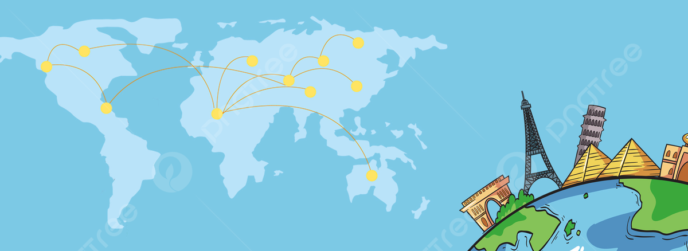

Welcome to World Explorer,
an engaging and interactive educational platform designed to expand your knowledge about the countries of our fascinating world. Whether you are a student, a geography enthusiast, or just someone eager to learn more about different cultures, World Explorer is the perfect place for you!
Discover the World
Our platform provides comprehensive information on every country around the globe. Dive into detailed profiles that include:
- Country Name and Flag: Instantly recognize countries by their flags.
- Capital Cities: Learn about the bustling hubs of governance and culture.
- Population: Get a sense of the size and diversity of each nation's people.
- Area: Understand the geographical expanse of different countries.
- Additional Facts: Explore unique aspects such as languages spoken, currency used, and historical tidbits.
Interactive Quizzes
Learning is best when it's fun! Challenge yourself with our interactive quizzes and test your knowledge on:
- Countries and Capitals: Can you match the capital cities to their countries?
- Flags of the World: Identify countries by their flags.
- Geographical Locations: Test your ability to locate countries on a map.
Our quizzes are designed to be both entertaining and educational, providing immediate feedback to help you learn and remember.
Share Your Thoughts
We value your insights and suggestions! After exploring the countries, take a moment to fill out our user feedback form. This form is conveniently placed after the country information and before the quizzes. Your feedback helps us improve the platform and provide an even better learning experience.
Save Your Favorites
While exploring, you can add countries to your favorites list. This feature allows you to easily access and review the countries that interest you the most.
User-Friendly Interface
Our website is designed with a clean, intuitive interface, making it easy for you to navigate and find the information you need. The responsive design ensures a seamless experience whether you are using a desktop, tablet, or mobile device.
Educational Benefits
World Explorer is not just a tool for individual learning but also an excellent resource for educators. Use our platform to create engaging lessons and activities for your students, encouraging them to explore and learn about the world in a fun and interactive way.
Join Us on a Journey of Discovery and Knowledge
Explore the world, one country at a time, with World Explorer! We are constantly updating and improving our platform. Your feedback and suggestions are invaluable to us, so feel free to reach out and let us know how we can enhance your learning experience. Happy Exploring!